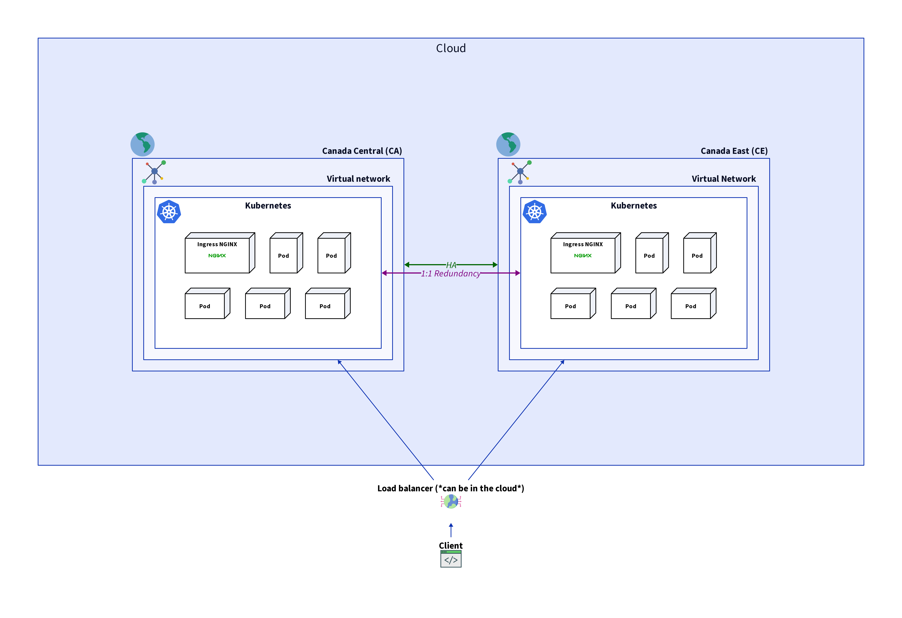

Generic architecture
Résumé exécutif
Les diagrammes en question fournissent une représentation visuelle de la stratégie d'infrastructure planifiée pour le laboratoire d'intelligence artificielle de l'Agence Canadienne d'Inspection des Aliments (ACIA). La raison de ce design est de répondre aux besoins des utilisateurs répartis sur la vaste étendue du Canada, y compris les principaux groupes d'utilisateurs dans le centre et l'est du Canada. En établissant deux clusters dans les régions géographiques centrales et orientales du Canada, l'ACIA vise à offrir un service optimal à tous les utilisateurs, quel que soit leur emplacement. Cette approche non seulement assure une haute disponibilité (HA) en réduisant le risque d'interruption de service due à des pannes régionales, mais maintient également une redondance un-à-un de tous les services, ce qui est crucial pour la reprise après sinistre et les opérations ininterrompues. Le placement stratégique de ces clusters permet une réplication efficace des données et des processus de basculement rapides, offrant ainsi une infrastructure robuste et fiable pour les opérations critiques de l'agence.
Glossaire
Kubernetes : Kubernetes est une plateforme open-source conçue pour automatiser le déploiement, la mise à l'échelle et le fonctionnement des conteneurs d'applications. Elle regroupe les conteneurs qui composent une application en unités logiques pour une gestion et une découverte faciles. Kubernetes fournit des outils pour orchestrer des systèmes distribués à grande échelle.
Pod : Dans le contexte de Kubernetes, un Pod est la plus petite unité déployable qui peut être créée et gérée. Il représente une instance unique d'un processus en cours d'exécution dans votre cluster et peut contenir un ou plusieurs conteneurs partageant le stockage, le réseau, et une spécification sur la façon d'exécuter les conteneurs. Les Pods sont éphémères par nature et peuvent être remplacés par Kubernetes en cas de défaillance de nœud ou d'autres événements.
Ingress : Ingress fait référence à l'acte d'entrer ou à la capacité d'entrer. Dans le contexte des réseaux et de l'informatique, cela désigne généralement le trafic entrant vers un réseau ou un service à partir d'une source externe.
Load balancer (Équilibreur de charge) : Un équilibreur de charge est un système qui distribue le trafic réseau ou applicatif sur plusieurs serveurs pour assurer qu'aucun serveur ne soit surchargé, améliorant ainsi la fiabilité et les performances des applications. Il aide à prévenir la surcharge des serveurs, à gérer le basculement, et à augmenter la disponibilité d'un site web ou d'un service en routant automatiquement les requêtes des clients vers le serveur le plus approprié.
Haute disponibilité (HA) : La haute disponibilité (HA) fait référence à des systèmes conçus pour être opérationnels et accessibles sans interruption significative. Cela est réalisé grâce à des mécanismes de redondance et de basculement, garantissant que si un composant échoue, un autre peut prendre le relais sans interruption du service. L'objectif de la HA est de minimiser les chances d'interruption de service due à des pannes matérielles, à la maintenance ou à des pannes imprévues.
Azure : Azure est un service de cloud computing créé par Microsoft pour construire, tester, déployer et gérer des applications et des services via des centres de données gérés par Microsoft. Il offre une gamme de services cloud, y compris ceux pour le calcul, l'analytique, le stockage et les réseaux. Les utilisateurs peuvent choisir parmi ces services pour développer et mettre à l'échelle de nouvelles applications ou exécuter des applications existantes dans le cloud public.
Au Canada, Azure dispose de deux régions : Canada Central (CA) et Canada East (CE). Canada Central est situé à Toronto et est conçu pour offrir une faible latence aux services financiers et autres entreprises de la région. Canada East, situé à Québec, fournit un support en langue française et une reprise après sinistre pour les entreprises qui nécessitent la résidence des données dans la province de Québec.
Virtual Network (VNet) : Un réseau virtuel dans le cloud est un environnement réseau simulé qui offre une séparation logique des ressources au sein d'une plateforme de cloud computing. Il permet aux utilisateurs de définir leur propre topologie de réseau, gérer les adresses IP, configurer des pare-feu, et de mettre en place des sous-réseaux et des tables de routage, tout cela dans un espace sécurisé et isolé qui imite les fonctionnalités d'un réseau traditionnel.
Diagrammes
Décrivez le fonctionnement de notre implémentation pour la haute disponibilité (HA) ainsi que la redondance des services au sein d'Azure en utilisant Kubernetes.
flowchart
subgraph Azure["Azure"]
direction TB
subgraph CC["Canada central (CA)"]
subgraph VNet1["VNet-CC"]
subgraph Kubernetes1["Kubernetes-CC"]
direction TB
Ingress1["Ingress"]
Pod1["Pod"]
Pod2["Pod"]
Pod3["Pod"]
Pod4["Pod"]
Pod5["Pod"]
Pod6["Pod"]
end
end
end
subgraph CE["Canada east (CE)"]
subgraph VNet2["VNet-CE"]
subgraph Kubernetes2["Kubernetes-CE"]
direction TB
Ingress2["Ingress"]
Pod7["Pod"]
Pod8["Pod"]
Pod9["Pod"]
Pod10["Pod"]
Pod11["Pod"]
Pod12["Pod"]
end
end
end
VNet1["VNet-CC"] <--->|HA| VNet2["VNet-CE"]
Kubernetes1["Kubernetes-CC"] <--->|1:1 redundancy| Kubernetes2["Kubernetes-CE"]
endReprésente le processus d'envoi d'une requête à notre infrastructure au sein d'Azure.
flowchart
Client["Client"] -->|request| LB
subgraph Azure["Azure"]
LB["Load balancer"]
LB --> VNet1
LB --> VNet2
direction LR
subgraph CC["Canada central (CC)"]
subgraph VNet1["VNet-CC"]
subgraph Kubernetes1["Kubernetes-CC"]
direction TB
Ingress1["Ingress"]
Pod1["Pod"]
Pod2["Pod"]
Pod3["Pod"]
Pod4["Pod"]
Pod5["Pod"]
Pod6["Pod"]
end
end
end
subgraph CE["Canada east (CE)"]
subgraph VNet2["VNet-CE"]
subgraph Kubernetes2["Kubernetes-CE"]
direction TB
Ingress2["Ingress"]
Pod7["Pod"]
Pod8["Pod"]
Pod9["Pod"]
Pod10["Pod"]
Pod11["Pod"]
Pod12["Pod"]
end
end
end
endReprésentation des deux diagrammes ci-dessus en un seul.
